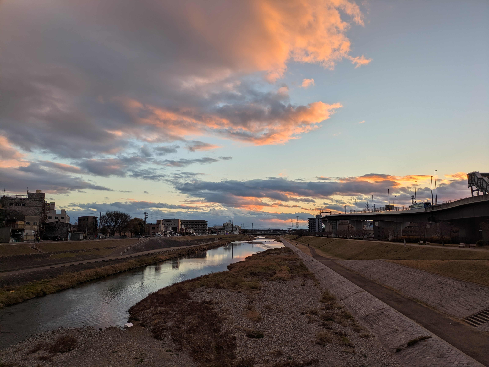

Ivan Doubovik
PhD Student
Mathematics
University of Lille
Laboratoire Paul Painlevé
Office: Building M3, Room 12
About Me
I am a PhD candidate in Mathematics at the University of Lille, where I work in analytic number theory, with a particular focus on quantum unique ergodicity for non-holomorphic Hilbert modular Eisenstein series.
Alongside my PhD research, I have developed an interest in the foundations of mathematics and dependent type theory. I am particularly interested in the relationship between proofs and computation, and have been exploring topics such as normalization and canonicity in type theories.
Research
Analytic Number Theory
My PhD research is in analytic number theory, with a particular focus on quantum unique ergodicity for non-holomorphic Hilbert modular Eisenstein series on shrinking sets.
Projects & Notes
This section contains projects, notes, and other work, including both completed and ongoing work.
I organized a reading group based on the paper "Automata in Number Theory" by Boris Adamczewski.
Participants: Angelot Behajaina, Didier Lesesvre, Théo Deturck, Emma Weschler, Maxence Suroy and myself.
Notes contributed by all members of the reading group.
A manuscript based on my master's project, which studies Tate's thesis in the case \(k = \mathbb{Q}\).
Some notes on the axiom of choice written as part of an English for Mathematics course in the Mathematics Master's programme. These notes were written jointly with my classmate and good friend, Lea Lopez.
This project began from my interest in video game development during high school and eventually grew into an attempt to build my own game engine. Although primarily a personal and educational project, it introduced me to many ideas in programming and computation and contributed to my later interest in mathematics and logic. The engine includes an implementation of the GJK (Gilbert–Johnson–Keerthi) collision detection algorithm. The project contains many naive design choices, bad practices, and other flaws that I am aware of in retrospect. Nevertheless, I have kept it as a record of my learning process, as the main purpose of the project was to explore programming and to understand how a game engine could be built from scratch.
Working on the engine introduced me to many ideas in computer science and mathematics and played an important role in my subsequent interest in mathematics and logic.